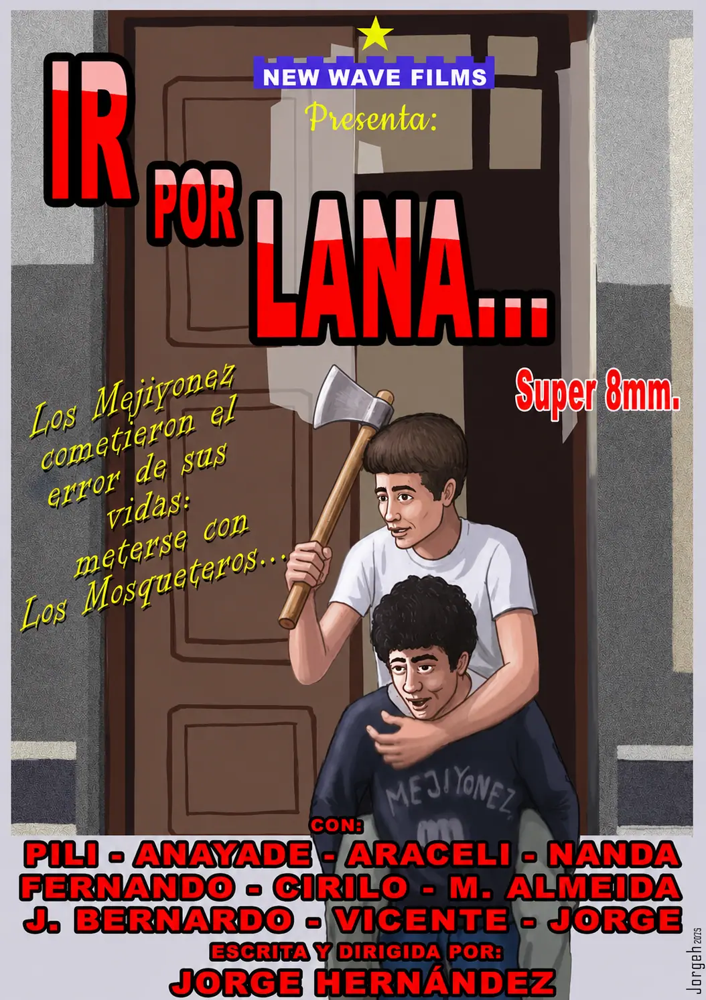

IR POR LANA...
IR POR LANA... Durante las Navidades de 1981 se rodó el segundo corto de NEW WAVE FILMS, una historia construida sobre el clásico enfrentamiento entre buenos y malos, siempre desde un tono humorístico y desenfadado.
Los protagonistas son Los Mosqueteros, un peculiar trío formado por Mónica (Pili), Barni (M. Alméida) y George (Jorge). Frente a ellos se encuentran Los Mejiyonez, una banda hasta entonces completamente pacífica encabezada por Vicente y formada por Anayade, Araceli, Nanda —la de las manos siempre en los bolsillos—, Cirilo, Fernando y J. Bernardo, más conocido como "Moñas".
La historia comienza cuando Los Mejiyonez atacan por sorpresa el club de Los Mosqueteros, dejando además su firma en el lugar de los hechos. A partir de ese momento se desencadena una sucesión de represalias, persecuciones y situaciones absurdas que convierten el enfrentamiento entre ambos grupos en una auténtica cadena de gags.
El corto refleja claramente la admiración de su director y guionista por el cine cómico mudo de Buster Keaton, Charles Chaplin, Harold Lloyd o Roscoe Arbuckle, cuyos recursos visuales y humorísticos inspiraron buena parte de las escenas.